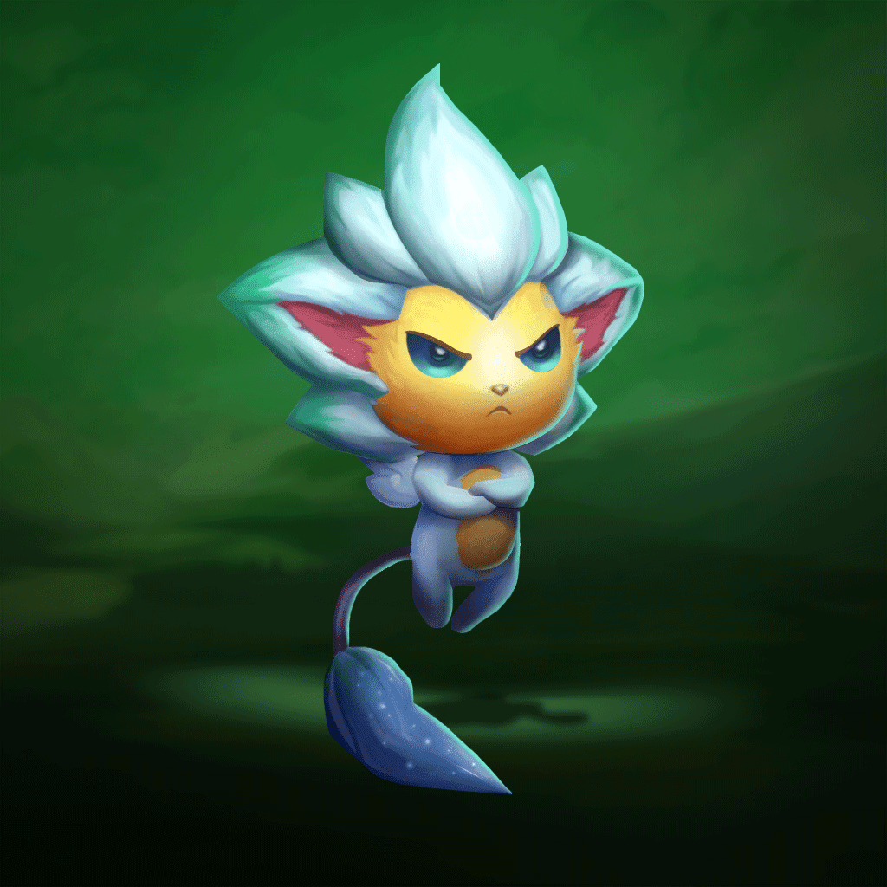

5. széria
5. széria4. széria
Csillagőrző kis legendák (Kis Őrzők)
Dango
Dangónak van a legnagyobb étvágya a Kicsi őrzők közül. Senki sem tudja, miért ilyen csillapíthatatlan az éhsége, de a vastayák szerint fel tud falni egy nála háromszor nagyobb felhőgyümölcsöt is.
Kinézetek
 |
Fuwa
Fuwa egy napon meg szeretné találni azt az Őrzőt, akit neki szánt a sors. Ha magányosnak érzi magát, hosszú füleiben keres menedéket.
Kinézetek
Shisa
Shisa egy fehéren izzó üstökössel robbant be a Szövetségbe. Az a célja, hogy megvédelmezze a Csillagőrzőket, és mindenkit, akit gondjaiba vett.
Kinézetek
|  |